Estos ejercicios no están todavía actualizados a WordPress 5.3.
Estos ejercicios no están todavía actualizados a WordPress 5.3.
El objetivo de esta página de ejercicios es practicar el uso de widgets y plugins en WordPress. Se pueden consultar las soluciones de estos ejercicios de WordPress, aunque se recomienda intentar realizarlos primero sin recurrir a estas soluciones.
Los plugins permiten ampliar la funcionalidad de WordPress como blog o incluso transformar WordPress en otro tipo de página web (CMS, tienda, etc.).
Los plugins se instalan y desinstalan en WordPress desde el menú Plugins.
Los plugins citados en esta lección se pueden encontrar en el directorio de plugins de WordPress o desde el propio WordPress en Escritorio > Plugins > Añadir nuevo.
La información que se ofrece en la directorio de plugins o en la aplicación es prácticamente la misma, como puede verse en la captura siguiente, pero en la aplicación hace referencia a la compatibilidad con la versión instalada e incluye un botón para instalar el plugin directamente.
 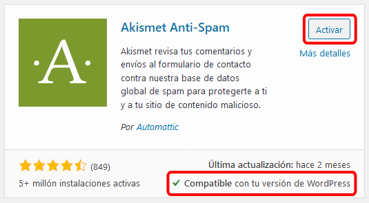
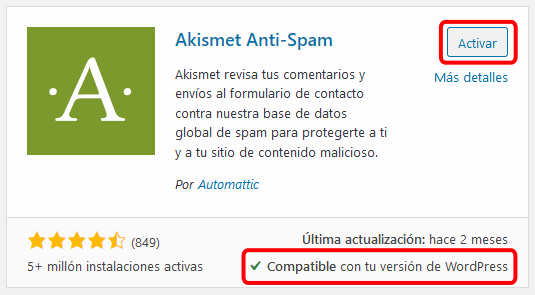
Los plugins que se muestran en el directorio de plugins de la web de WordPress son gratuitos, aunque en muchos casos de trata de versiones gratuitas de plugins de pago, con opciones limitadas.
En Internet existen bastantes directorios enfocados a plugins de pago como:
Los plugins propuestos en esta página estaban disponibles para WordPress 5.0 en el momento de redactar estos ejercicios (enero de 2019). Es posible que en futuro esos plugins no estén disponibles para versiones posteriores de WordPress, o incluso hayan dejado de estar disponibles para cualquier versión. En ese caso, se pueden utilizar otros plugins de los disponibles en ese momento.
El directorio de plugins de WordPress cambió su diseño en marzo de 2017 y su usabilidad ha sido bastante criticada (por ejemplo, este artículo de Jeff McNeill o los comentarios de este post comentado la puesta en marcha).
La principal crítica es posiblemente que no se pueden personalizar las búsquedas (por popularidad, valoraciones, fecha de actualización, existencia de versión de pago, etc.).
Por ejemplo, si se conoce el nombre de un plug-in, se suele encontrar antes buscando en Google (añadiendo site:https://es.wordpress.org en la búsqueda para que la respuesta sea la página del directorio de plugins) que en el propio directorio.
Quizás por este motivo en la web se publican continuamente cientos de páginas que recopilan recomendaciones de plugins de todo tipo, aunque la mayoría de estas páginas no ofrecen demasiada información y están copiadas unas de otras. Cuando se está buscando un plugin, se aconseja buscar páginas de recomendaciones de plugins (del tipo que estemos buscando), que sean recientes y mirar en ellas qué plugins se recomiendan habitualmente. Una vez conocido el nombre de los plugins, se puede buscar en Google para encontrar su página en el directorio de plugins de WordPress.
Los widgets son los elementos que se pueden incluir en las barras laterales y en la parte inferior. En el tema Twenty Twenty hay dos áreas de widgets (dos columnas al final de la página), mientras que en el tema Twenty Nineteen había sólo un área de widgets (al final de la página) y en Twenty Seventeen había tres áreas (una barra lateral y dos columnas al final de la página).
De forma predeterminada, están activados los widgets Buscar, Entradas recientes, Comentarios recientes, Archivos, Categorías y Meta.


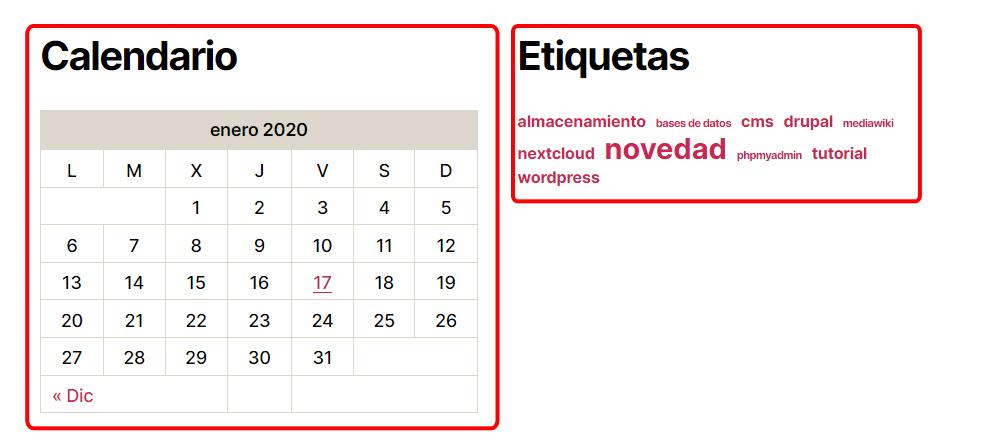
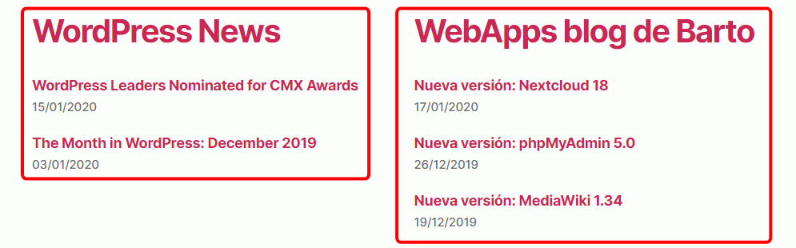
Active el widget Texto. Configúrelo para que contenga algún lema apropiado al tema o espíritu del blog y algún enlace a páginas importantes.

Fuente: Proverbios latinos
Configure el widget Meta y modifique su código fuente (haga antes una copia de seguridad del archivo original) para dejar el widget con sólo una opción (o dos si ha accedido como usuario registrado):


Configúrelo para insertar una imagen que enlace a algún sitio.
Configúrelo para insertar una canción (ejemplo: la canción Pizzicato (3,3 MB) del álbum Les temps modernes del compositor belga Emmanuel Codden "Ehma").
Puede ser necesaria cambiar la configuración de PHP para permitir la subida de archivos grandes.
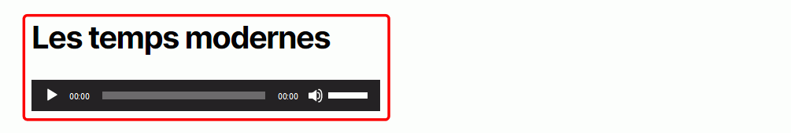
Configúrelo para insertar dos o tres imágenes.
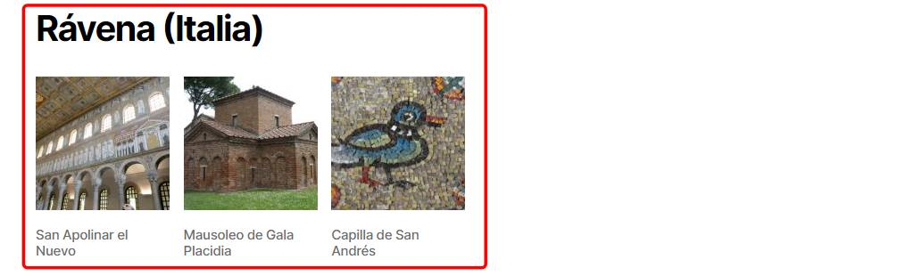
Configúrelo para insertar un vídeo relacionado con el tema (en el ejemplo se ha insertado la conferencia "State of the Word 2019", de Matt Mullenweg, el creador de WordPress, disponible en https://www.youtube.com/watch?v=LezbkeV059Q.
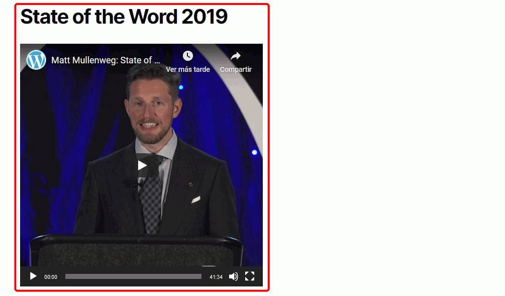
Configúrelo para insertar un par de enlaces a otras páginas web relacionadas.
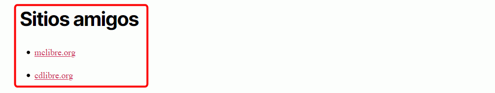
WordPress permite insertar en sus páginas contenido alojado en otros servicios disponibles en la web o contenido en formatos no propios de la web. En algunos casos se puede realizar la inserción directamente, pero normalmente se debe recurrir a plugins.
En el caso de unos cuantos servicios muy populares (Youtube, Scribbd, Issuu, Flickr, TED, etc. en la página https://codex.wordpress.org/Embeds hay una lista completa), basta con copiar la dirección del recurso y WordPress lo muestra automáticamente.
Cree algunas entradas con elementos insertados. Por ejemplo:
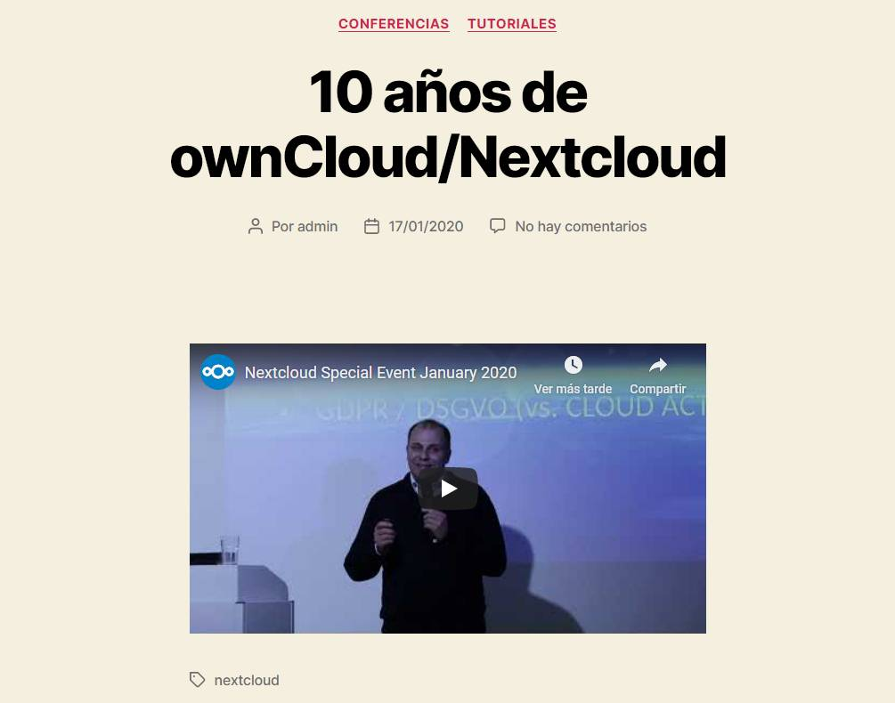
Nota: Flickr tiene un apartado de fotos con licencias CC: https://www.flickr.com/commons
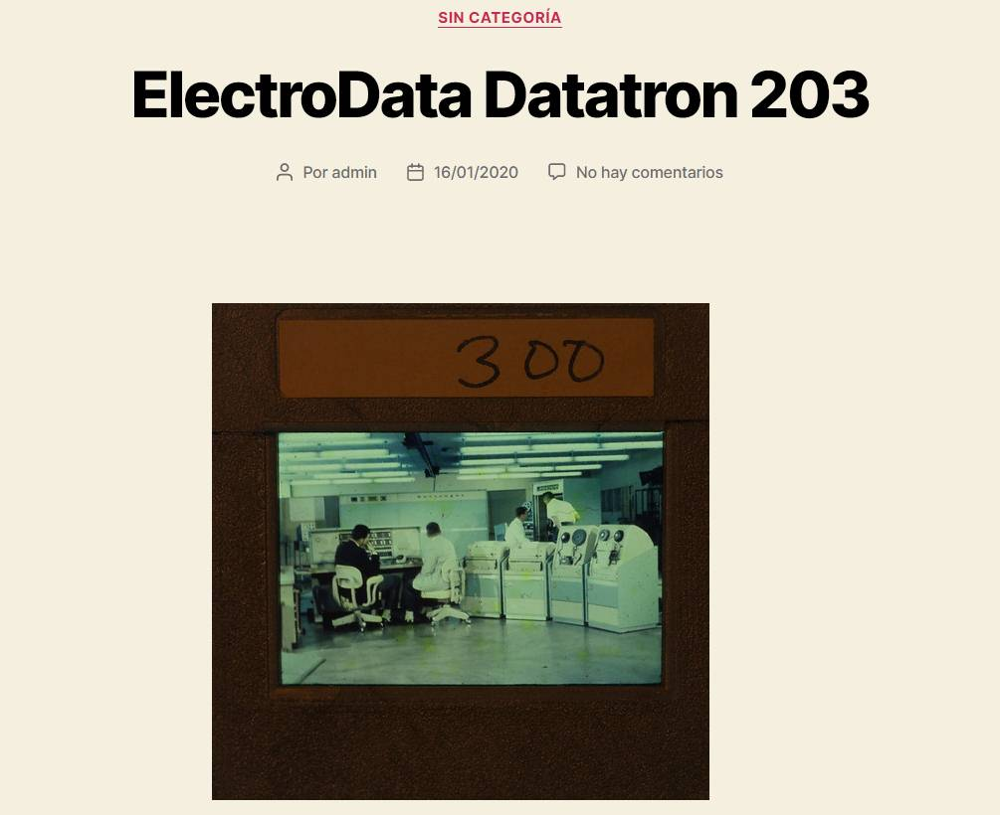
En general, para la mayoría de tipos de contenidos se necesitan instalar plugins específicos que permiten personalizar el contenido insertado.
Estos son dos de los plugins más populares para insertar vídeos de YouTube. Pruebe estos plugins creando entradas con vídeos insertados y compare su funcionalidad.
Estos son dos de los plugins más populares para insertar PDFs. Pruebe estos plugins creando entradas con pdfs insertados y compare su funcionalidad. Los pdf a insertar pueden ser alguna de las revistas de la biblioteca de revistas de mclibre.
Desde 2016 Google maps requiere una clave API para gestionar mapas. Lógicamente, los plugins necesitan la clave para funcionar correctamente. La clave API se puede solicitar en la Google Developers Console, creando un proyecto y solicitando una clave Maps Javascript API. Tenga en cuenta que Google cobra por el uso de la clave a partir de cierta cantidad de uso (Tarifas). El ejercicio propuesto no requiere solicitar ninguna clave.
Referencia: Guía oficial de Google Maps JavaScript API
Estos son varios de los plugins más populares para insertar mapas de Google Maps.
Nota: Teóricamente, WP Google Maps permite utilizar también como proveedor de mapas a OpenStreetMap, lo que permite prescindir de la clave API, pero no tengo claro que sea actualmente posible .
Pruebe estos plugins creando entradas con mapas de Google Maps insertados y compare su funcionalidad. Los ejemplos siguientes muestran el lugar donde nació la web (el despacho de Tim Berners Lee en el CERN, situado en Ginebra (Suiza), más exactamente, en un despacho del edificio 31).
Nota: Este es el código del mapa:
[osm_map_v3 map_center= "46.233,6.047" zoom="17" width="100%" height="450" map_border="thin solid " post_markers="1" type="" control="" ]
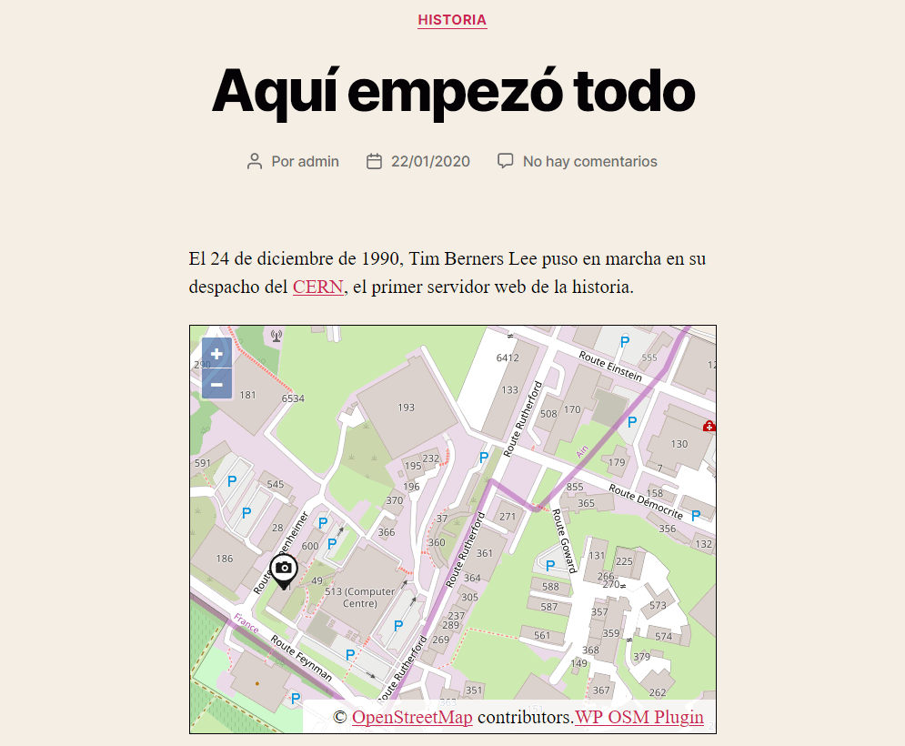

Añada en la lista negra algunos términos que en ningún caso queremos ver en los comentarios. Compruebe que funciona y que los comentarios que contienen esos términos no son publicados.
Los plugins de calendarios permiten crear calendarios en nuestro propio WordPress o simplemente mostrar calendarios creados en otros sitios (por ejemplo, en Google Calendar), o ambas cosas.
Para insertar un calendario de Google Calendar, es necesario disponer de una clave API. Actualmente (enero de 2019), Google permite un millón de peticiones diarias gratuitas [ref] por clave.
En cualquier caso, se puede crear una clave API, realizar el ejercicio, y destruir la clave. Las claves se pueden solicitar aquí, creando un proyecto y después la clave. En la ayuda de uno de los plugins propuestos (Simple Calendar) se encuentra una guía de creación de clave API para calendarios.
Una vez creada la clave API, se debe introducir en la configuración del plugin. A continuación se debe crear un calendario en Google Calendar y hacerlo público. Por último se debe definir un calendario en el plugin, indicando la ID del calendario público correspondiente. En la ayuda de uno de los plugins propuestos (Simple Calendar) se encuentran guías para la realización de cada uno de estos pasos.
Referencia: Guía oficial de Google Calendar API
Pruebe algún plugin para crear calendarios, por ejemplo:
Instale algún plug-in gratuito relacionado con estos temas:
Plugins para investigar: